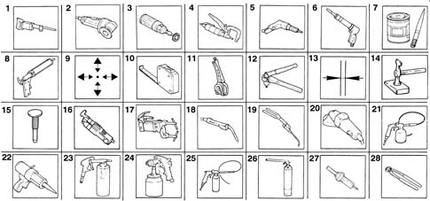
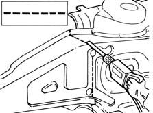
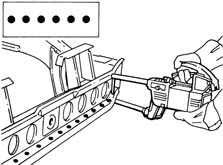
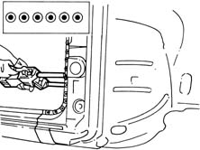
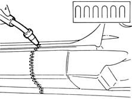
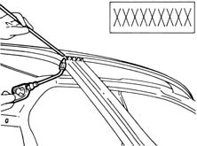
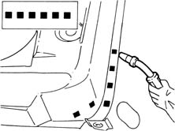
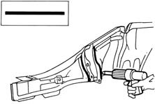

Introduction - REMOVING REFITTING
- Path
- Procedures > 72 PANELS AND FRAME > 7210 REMOVING REFITTING > Introduction - REMOVING REFITTING
- Kind
- repair procedure (removal / refitting; the operation number is the code)
- Applies to
- all engines; all production periods
- Interactive page
- https://sloeber94.github.io/elrnDB-lYpsln/en/#/2429970
Applies to: all engines; all production periods
SPECIFCATIONS
Applies to: all engines; all production periods
WARNINGS
The graphic index and the description of the symbols appearing in the repair procedures are given below.
Applies to: all engines; all production periods
SYMBOLS
.

1 Cut with hack-sawing machine 2 Cut with circular saw 3 Clean with rotary brush 4 Remove spot welds with spot weld remover 5. Removing spot welds with spot weld remover Drilling for MIG welding 6. Preparing panel using chisel Drilling for MIG welding 7. Application of electro-weldable protection 8. Application of thick electro-weldable protection 9. Centring components 10. Measurement 11. Fixing components 12. Fixing threaded rivets 13. Checking alignment gaps 14. Straightening edges with profiled stake and hammer 15. Removing weld spots with chisel and hammer 16. Removing treatment with pneumatic knife 17. Spot welding 18. MIG welding 19. Welding with oxyacetylene torch 20. Grinding 21. Application of anti-corrosion protection 22. Application of sealants 23. Application of underbody protections 24. Application of paints 25. Application of wax-based protection 26. Application of foam products 27. Heating with hot air 28. Removing panel offcuts
Applies to: all engines; all production periods
PROCESSING SYMBOLS
The symbols are given below of the work tasks which are described in the repair procedures with an example of application. In the descriptions of the procedures, beside the progressive number of the steps of the procedure relating to welding tasks, there may be numbers in brackets which indicate the number of spot welds to be made or to be filled by MIG welding.
Cut made by hack saw or pneumatic chisel

Applies to: all engines; all production periods
PROCESSING SYMBOLS
Spot welding

Applies to: all engines; all production periods
PROCESSING SYMBOLS
Spot welding (three panels)

Applies to: all engines; all production periods
PROCESSING SYMBOLS
Continuous - sectional MIG welding

Applies to: all engines; all production periods
PROCESSING SYMBOLS
Brazing

Applies to: all engines; all production periods
PROCESSING SYMBOLS
MIG fill welding

Applies to: all engines; all production periods
PROCESSING SYMBOLS
Sealing
